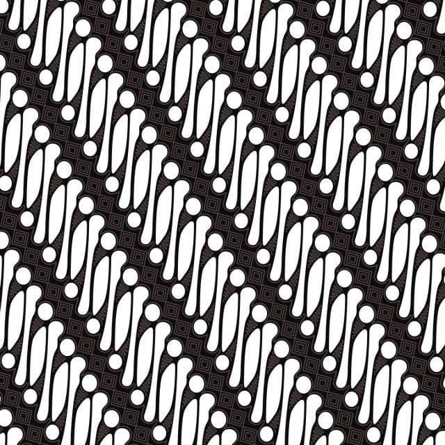
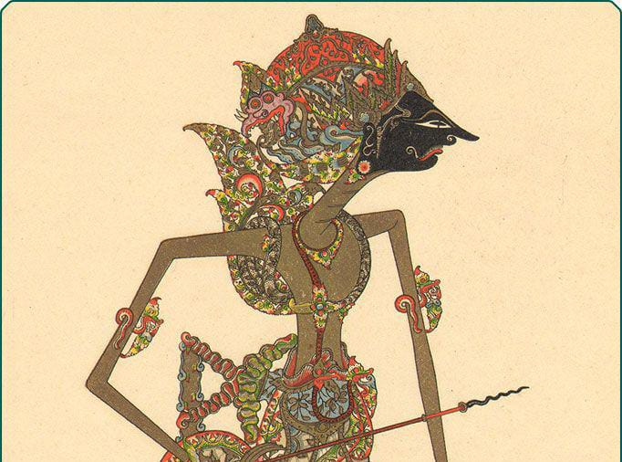
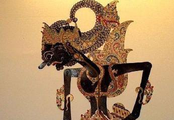
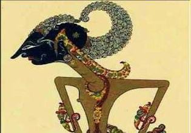
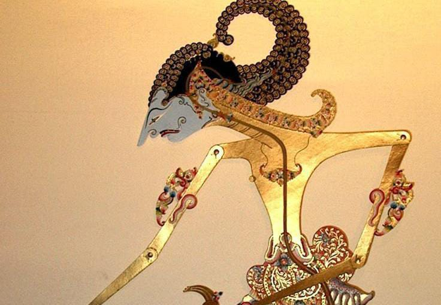
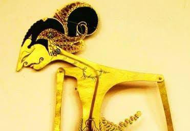
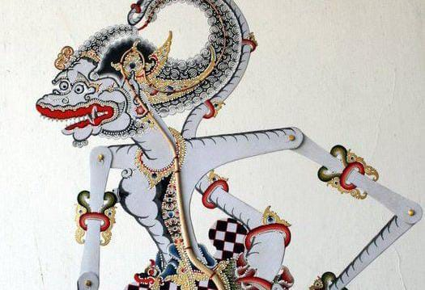
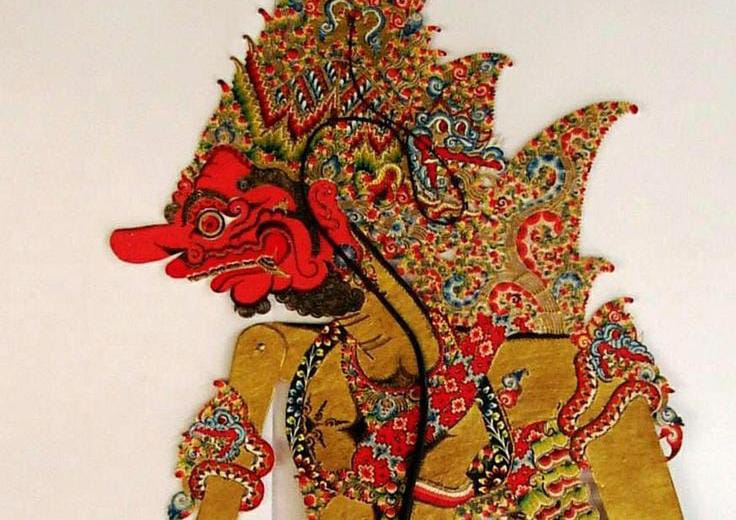
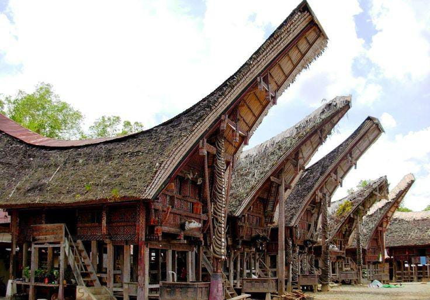

Batik Tradisional

Kebudayaan Indonesia adalah keseluruhan sistem gagasan, perilaku, dan hasil karya manusia yang berkembang dan diwariskan dari generasi ke generasi. Ini mencakup berbagai aspek, mulai dari kebudayaan lokal, nasional, hingga pengaruh kebudayaan asing yang telah menjadi bagian integral dari masyarakat Indonesia. Kebudayaan Indonesia memiliki keragaman yang kaya, mencerminkan pluralitas suku, agama, dan tradisi di berbagai wilayah.
Indonesia dikenal dengan warisan budayanya yang kaya, mulai dari batik yang telah diakui UNESCO sebagai Warisan Budaya Tak Benda, seni pertunjukan seperti wayang kulit, berbagai tarian adat dari setiap daerah, hingga rumah adat yang mencerminkan kearifan lokal, keberagaman arsitektur tradisional.
Batik adalah kain tradisional Indonesia yang dibuat dengan teknik khusus menggunakan malam (lilin) dan pewarna alami. Setiap motif batik memiliki makna filosofis yang mencerminkan nilai budaya dan sejarah dari daerah asalnya. Pada tahun 2009, UNESCO menetapkan batik sebagai Warisan Budaya Tak Benda dunia.

Wayang Kulit adalah seni pertunjukan tradisional Indonesia yang dimainkan oleh dalang dengan boneka kulit di depan layar putih, diterangi cahaya lampu. Diiringi musik gamelan dan suluk, pertunjukan ini bukan sekadar hiburan, tetapi juga media pendidikan dan penyampaian nilai moral serta budaya. Pada tahun 2003, UNESCO menetapkannya sebagai Warisan Budaya Tak Benda Dunia.

Rumah adat di Indonesia mencerminkan kekayaan budaya dan kearifan lokal setiap daerah. Dibangun dengan memperhitungkan kondisi alam, adat istiadat, serta fungsi sosial, setiap rumah adat memiliki bentuk, bahan, dan ornamen khas. Selain sebagai tempat tinggal, rumah adat juga berperan dalam upacara adat dan kehidupan sosial masyarakat setempat.

Tarian daerah adalah bentuk seni pertunjukan tradisional yang berasal dari suatu wilayah dan mencerminkan budaya serta adat istiadat masyarakat setempat. Setiap tarian memiliki ciri khas, seperti gerakan, kostum, musik pengiring, dan makna simbolis. Selain sebagai hiburan, tarian daerah juga berfungsi dalam upacara adat, keagamaan, dan perayaan penting.

Kumpulan Warisan Budaya Indonesia yang Menginspirasi Dunia.
Yuk, kenali lebih dalam tentang budaya Indonesia yang kaya dan beragam!.
Kain tradisional Indonesia dengan motif simbolik yang kaya makna. Tiap pola batik mencerminkan identitas daerah dan cerita kehidupan.


Seni pertunjukan tradisional yang memadukan cerita, musik, dan filsafat Jawa. Tiap tokoh wayang membawa nilai moral dan ajaran hidup.






.jpg)
Brahala
.jpg)
Burisrawa
 (1).jpg)
Antareja
 (1).jpg)
Sekutrem
Bangunan tradisional yang mencerminkan budaya, struktur sosial, dan nilai-nilai leluhur. Setiap bentuknya unik sesuai karakter daerah asal.





Bumbungan Lima

Umeak potong Jang

Rumah Adat Umoh Laheik

Rumah Adat Kajang Lako
Ekspresi budaya lewat gerak tubuh yang sarat makna dan simbol. Tiap tarian mencerminkan kisah, kepercayaan, dan identitas suatu daerah.


Tari Merawai

Tari Leleng

Tari Gawi

Tari Topeng Malang

Tari Merak